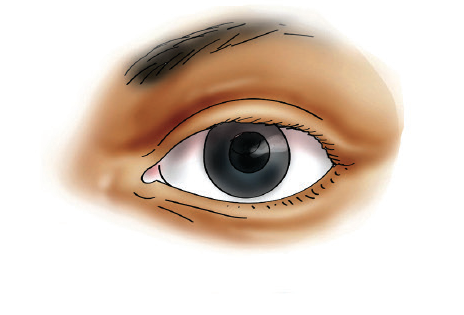
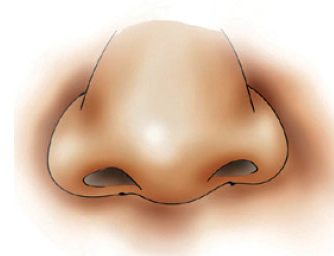
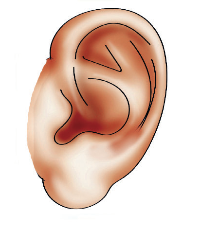
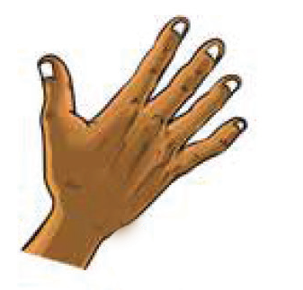

organs are the ear, eye, nose, skin and tongue. Figure 1 shows human sense organs. The sense organs receive the stimuli from the environment and send the information to the brain for interpretation.

Eye

Nose

Ear

Skin
Tongue
Figure 1: Human sense organs